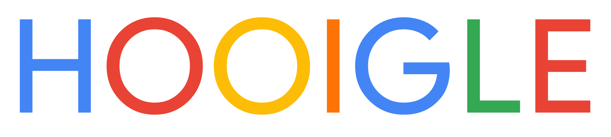

KeRas1n
веб дев | гейм дев
Эта страница была сделана просто потому что я не знаю какую ссылку подставлять под "Made by KeRas1n"
Веб

Hooigle - твоя новая кастомизируемая и комфортная домашняя страница.
В этом single page application вы сможете:
- выбрать поисковик
- полностью кастомизировать внешний вид
- добавлять виджеты по типу погоды и конвертера валют
- добавлять и редактировать закладки
Вы можете использовать HOOIGLE как в веб-версии так и в качестве расширения для вашего браузера для авто замены новой вкладки.
Игры
Пародия на FNAF с Дорой и Мэйби бейби.
Игра сделана по рофлу и на момент её создания я знал гораздо меньше о UNITY.